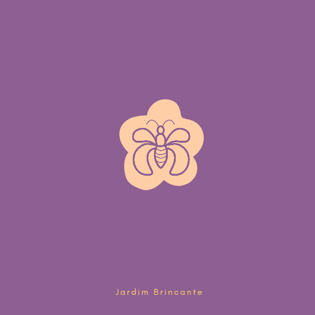
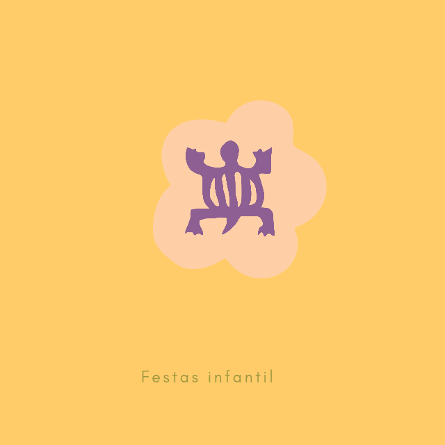
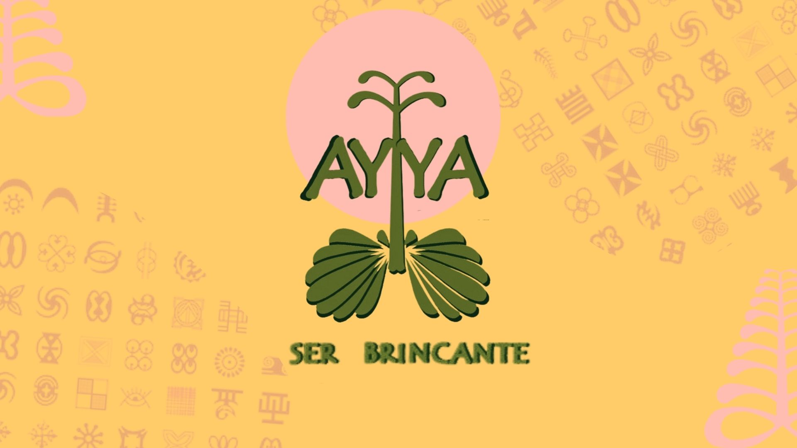

Bem-vindo ao Ayya Ser Brincante
Transformando brincadeiras em aprendizado e criatividade.

Transformando brincadeiras em aprendizado e criatividade.
A empresa Ayya Ser Brincante promove experiências lúdicas para crianças, combinando criatividade, movimento e aprendizado. Idealizada pelo fundador Gabriel Pires Delphino, Ayya Ser Brincante surgiu no ano de 2024 na cidade de Paraty, Rio de Janeiro, com instuito de oferecer Brincadeiras lúdicas, diversão e acolhimento para crianças da região tanto da rede pública como da rede privada. Em 06 de Janeiro de 2024, a empresa surge na região do bairro Caborê dentro do espaçao Casa Brincante administrado pela Mariah e o Gabriel, este projeto abriu as portas para que o fundador Gabriel criasse o projeto Brincar na férias que aconteceu no periodo das férias de Janeiro do ano de 2024. Ao longo do ano de 2024, a empresa foi criando corpo e assim surgiu outro projeto "Jardim Brincante" que surgiu no Instituto Brincarte que são administrados pela Monalisa Couto e o Zé Geraldo. Além disso, a empresa seguiu o ano de 2024 realizando animação de festas infantil na cidade de Paraty.
🌿 Jardim Brincante: Atividades aos sábados e feriados em Paraty.
O projeto Jardim Brincante surgiu com intuito de contribuir na opções de cultura e lazer oferecidas pela cidade de Paraty aos sábados e feriados.
🎨 Brincar nas Férias: Recreação nos meses de férias.

🎈 Recreação para Festas: Entretenimento infantil para eventos.
📚 Livros Infantis: Literatura para incentivar a imaginação.
🎲 Brinquedos Educativos: Jogos e brinquedos para estimular o aprendizado.
🎭 Materiais Criativos: Itens para atividades artísticas.
📧 Email: contato@ayyaserbrincante.com
📍 Localização: Paraty e São Paulo